Selected Case / Campaign Visual
Calvin Klein
All in one 与活动视觉
呈现 Calvin Klein 微信 All in one 小程序与品牌活动视觉。小程序界面覆盖品牌首页、商品分类浏览和社区内容；活动页面涉及会员权益、主题互动、任务与奖励等场景。
小程序 UI / 用户体验
Calvin Klein All in one 小程序
通过首页品牌内容、商品浏览与社区发现，呈现小程序内的主要浏览入口与内容层级。
品牌活动与营销体验
互动活动与会员权益
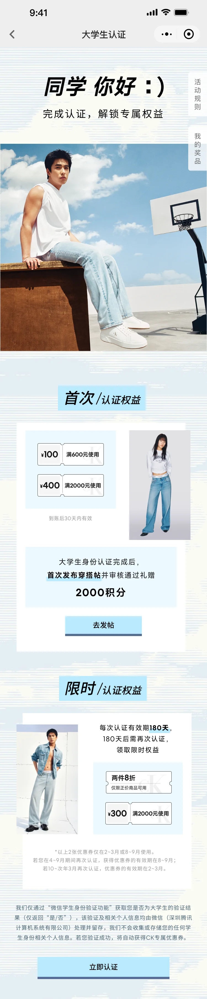
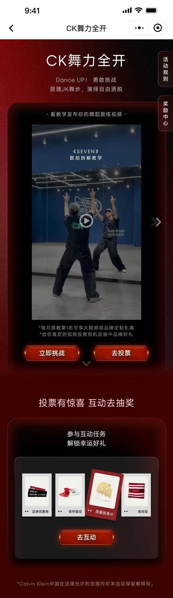
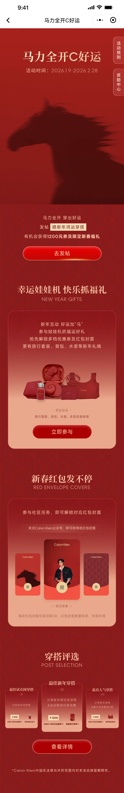
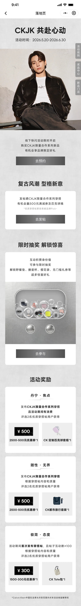
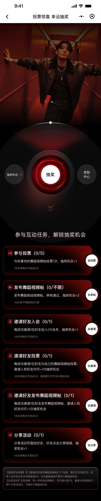
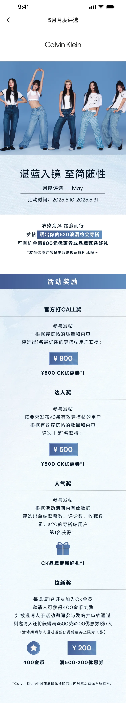
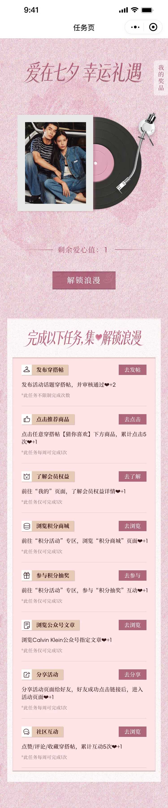
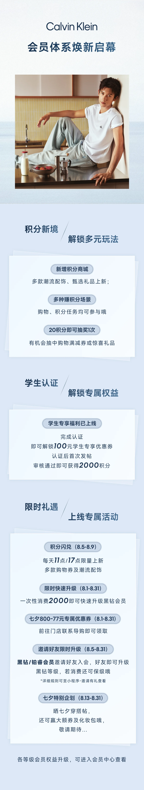
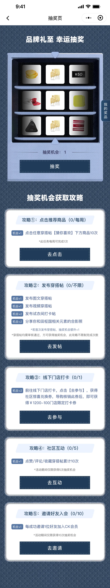
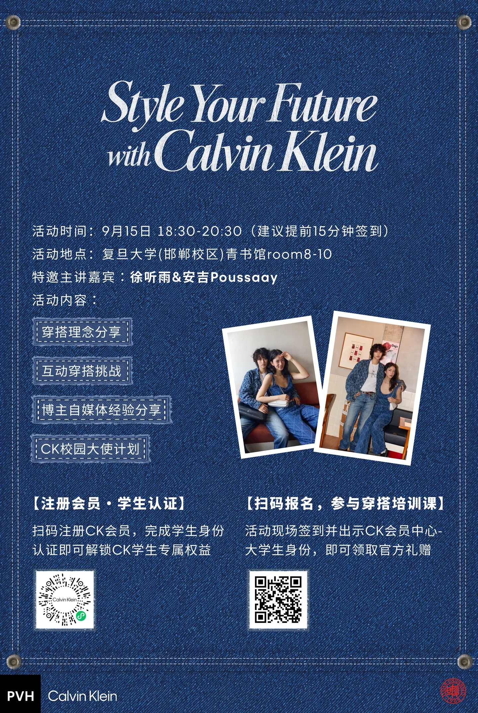
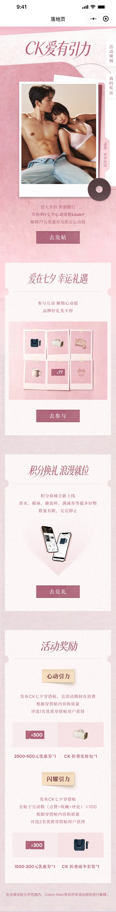
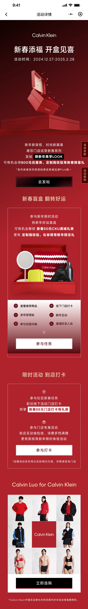
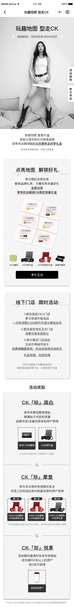
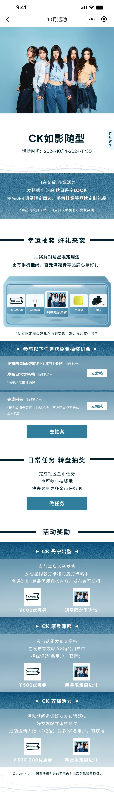
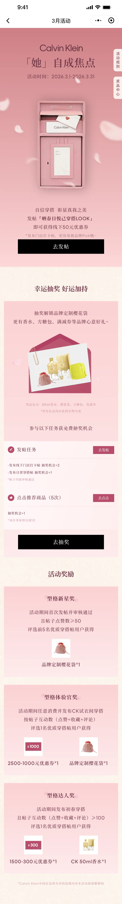
活动页面与传播视觉围绕品牌调性展开，并根据活动主题延展不同配色与内容表达。